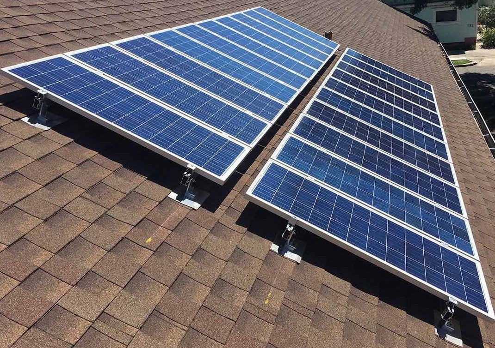

On a political level- make policies that force people to recycle, and make companies use as little waste products as possible. (Reusable bags, buy less).
Government- spend money on more recycling machines and to make filters that could clean rivers of larger waste in major cities. (trash collectors).
Create more cars, stoves, etc that run on electricity not gas and fossil fuels.
Ban smoking, vaping, etc because that emits too much toxins into the air as well.
Plant more trees in the cities around the United State
 The easiest way to cut back on greenhouse gas emissions is simply to buy less stuff. Whether by forgoing an automobile or employing a reusable grocery sack, cutting back on consumption results in fewer fossil fuels being burned to extract, produce and ship products around the globe.
Corn grown in the U.S. requires barrels of oil for the fertilizer to grow it and the diesel fuel to harvest and transport it. Some grocery stores stock organic produce that do not require such fertilizers, but it is often shipped from halfway across the globe. And meat, whether beef, chicken or pork, requires pounds of feed to produce a pound of protein.
Today, 314,000 wind turbines supply 3.7 percent of global electricity. It will soon be much more. In 2015, a record 63 gigawatts of wind power were installed around the world, despite a dramatic drop in fossil-fuel prices. In many locales, wind is either competitive with or less expensive than coal-generated electricity.
Stop letting food waste. It should be redistributed to those who need it instead of having it go in the trash or laying around making the world smell rotten.
Solar panels funded by the government Solar panels funded by the government